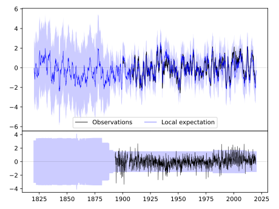
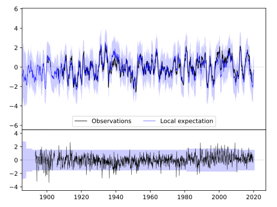
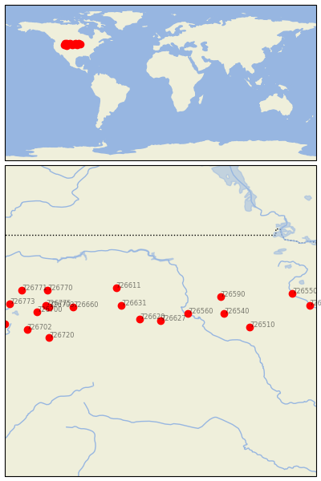

COTTONWOOD 2 E [USA]


| Neighbour | Name | Country | Distance | Lon/Lat | Years |
|---|
| 726627 | COTTONWOOD 2 E | USA | 0 | -101.9, 44.0 | 1893-2019 |
| 726620 | RAPID CITY, SOUTH DA | USA | 96 | -103.1, 44.1 | 1888-2020 |
| 726560 | PIERRE | USA | 135 | -100.3, 44.4 | 1891-2020 |
| 726631 | COLONY | USA | 208 | -104.2, 44.9 | 1893-2019 |
| 726611 | EKALAKA | USA | 294 | -104.5, 45.9 | 1893-2019 |
| 726540 | HURON, SOUTH DAKOTA | USA | 298 | -98.2, 44.4 | 1881-2020 |
| 726590 | ABERDEEN RGNL AP | USA | 317 | -98.4, 45.4 | 1890-2020 |
| 726660 | SHERIDAN, WYOMING | USA | 414 | -107.0, 44.8 | 1893-2020 |
| 726510 | SIOUX FALLS/FOSS FLD | USA | 419 | -96.7, 43.6 | 1938-2020 |
| 726703 | LOVELL | USA | 523 | -108.4, 44.8 | 1909-1980 |
| 726720 | RIVERTON | USA | 535 | -108.4, 43.0 | 1899-2019 |
| 726775 | DEAVER | USA | 540 | -108.6, 44.9 | 1916-1980 |
| 726770 | BILLINGS | USA | 556 | -108.5, 45.8 | 1909-2020 |
| 726700 | CODY | USA | 575 | -109.1, 44.5 | 1895-2019 |
| 726702 | DUBOIS | USA | 628 | -109.7, 43.5 | 1895-2019 |
| 726550 | ST.CLOUD | USA | 632 | -94.2, 45.6 | 1893-2020 |
| 726771 | BIG TIMBER | USA | 668 | -110.0, 45.8 | 1893-2019 |
| 726580 | MINNEAPOLIS/ST PAUL | USA | 697 | -93.2, 44.9 | 1819-2020 |
| 726773 | YELLOWSTONE PK MAMMO | USA | 706 | -110.7, 45.0 | 1887-2019 |
| 726704 | ALTA 1 NNW | USA | 729 | -111.0, 43.8 | 1897-2019 |